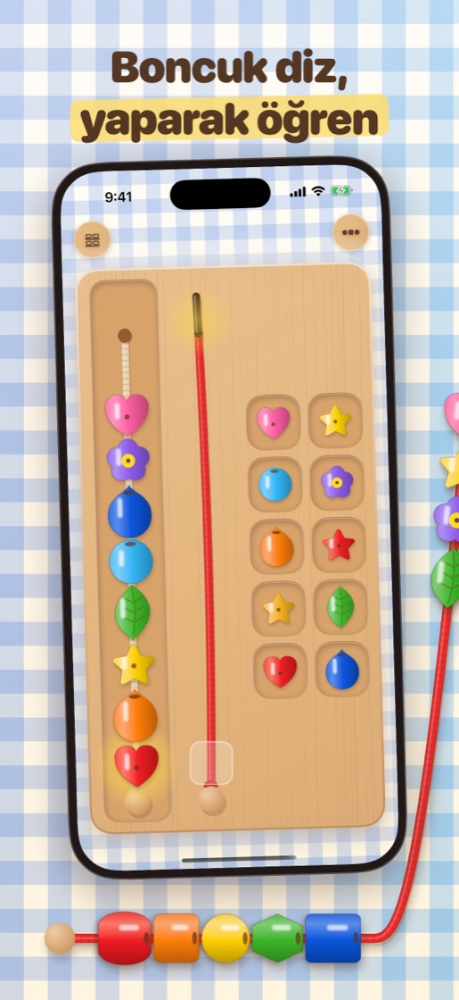
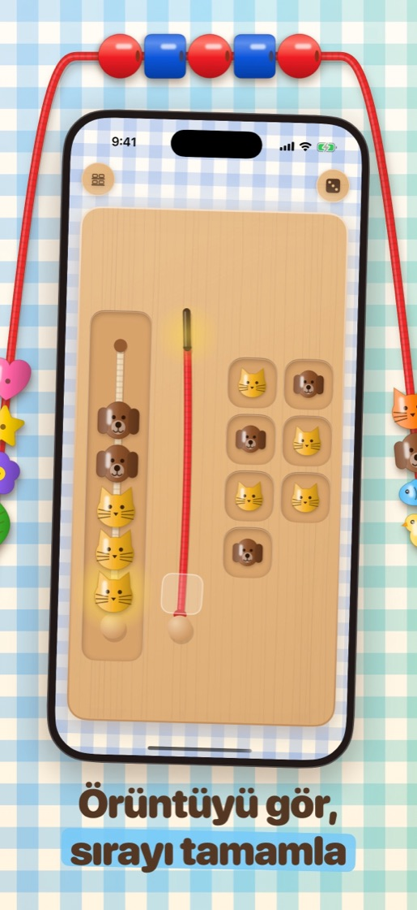
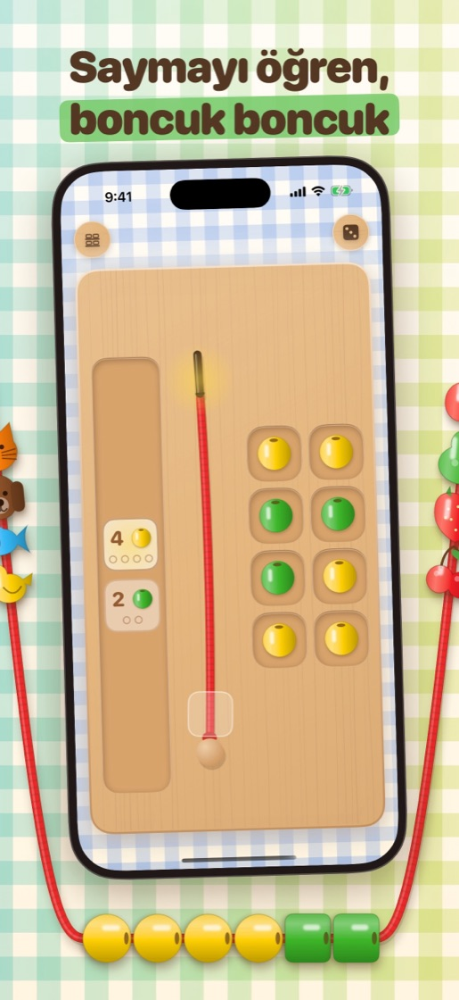
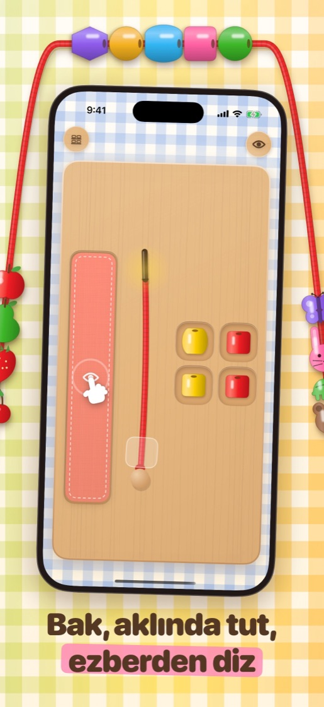
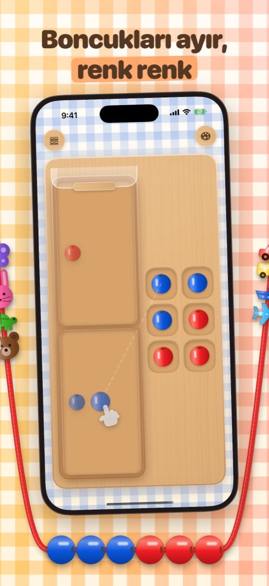
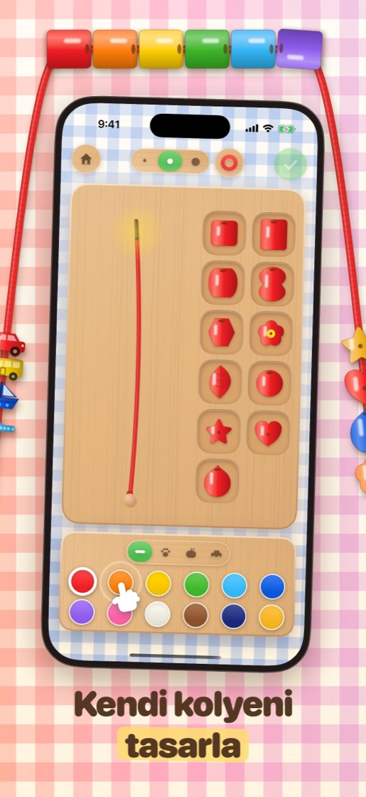
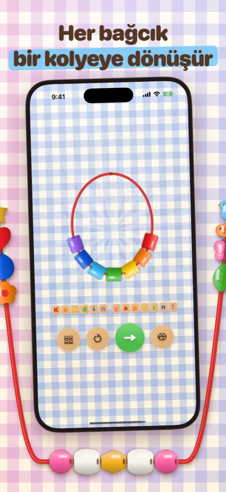
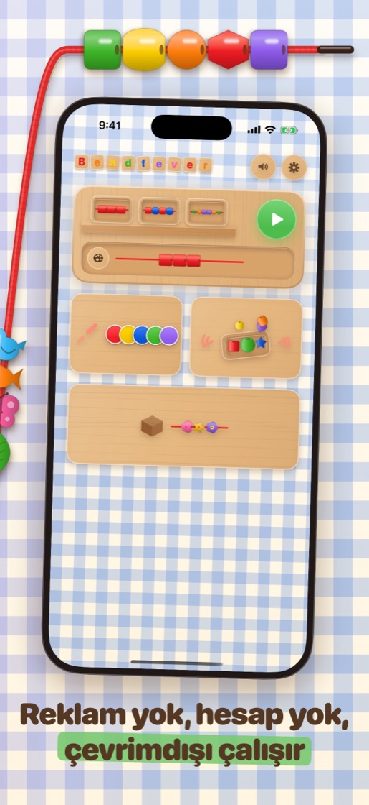

Gerçek malzeme
Boyalı ahşap boncuklar, sert uçlu kırmızı örgü bağcık, ahşap durdurucu. Renk bilgi taşır; hiçbir şey yalnızca süs için orada değil.
Küçük eller için Montessori boncuk dizme
Ahşap bir boncuk al, bağcığın ucuna götür ve aşağı kaymasını izle. Örneği boncuk boncuk kopyala, kendi kolyeni yap.
İndirmesi ücretsiz · iPhone ve iPad
Beadfever, her Montessori sınıfında bulunan ahşap boncuk dizme setinden esinlenir. Tek bir ahşap çalışma tepsisinde her şey yerli yerinde: solda örnek bağcık, ortada çocuğun bağcığı, sağda boncuk gözleri. Her boncuk örnekteki eşiyle aynı hizaya oturur; kopyalamak kendiliğinden olur.
Puan, yıldız ya da süre yok. Yanlış boncuk sessizce tepsiye döner, örnekteki doğru boncuk bir an parlar. Bağcık dolunca çocuk kendi yaptığı kolyeyi görür. Ödül budur.








Boyalı ahşap boncuklar, sert uçlu kırmızı örgü bağcık, ahşap durdurucu. Renk bilgi taşır; hiçbir şey yalnızca süs için orada değil.
Hatayı malzemenin kendisi gösterir: boncuk tepsiye döner, örnek parlar. Çocuk azarlanmadan fark eder ve düzeltir.
Yıldız, puan ya da seri yok. Bir çalışmayı bitirmek çocuğun yaptığı kolyeyi gösterir; tekrar etmek ya da devam etmek onun seçimi.
Çalışmalar açık ahşap raflarda kolaydan zora bekler. Henüz sunulmamış çalışmaların boncukları boyasız ham ahşaptır.
Her adım tek bir zorluğu ayırır, sonra birleştirir.
Serbest oyun: boya kabından renk seç, istediğin şekli ya da hayvanı al, kendi kolyeni diz. Son boncuğa dokununca çıkar.
Biten her çalışma ve atölye kolyesi burada saklanır: çocuğun kendi koleksiyonu.
Hedef yok, puan yok: boncuk at, eğ ve salla, lastikleri ger, boncukları mıknatısla topla.
Beş boncuğu istediğin şekil ve renkte seç, kapıyı aç: çivili pistten yuvarlanıp 1'den 5'e numaralı yuvalara yerleşirler. Puan yok, kaybeden yok.
Tam sürümde bazı boncukların kendi yumuşak sesi ve izi var: uçak rüzgâr çizgileri bırakır, araba duman çıkarır, tren buhar salar, kedi miyavlar.
Ebeveyn diziyi hazırlar, çocuk dizer. Beğenilen diziler rafa kaydedilir.
“Kırmızı küp, sarı fıçı…” – dizi çocuğun dilinde sesli okunur.
Yassı, boyalı ahşap figürler – balık, kuş, kaplumbağa, ayı, kedi ve köpek, ayrıca meyve ve araç boncuklar – rafta ve atölyede.
Yaklaşık 2–6 yaş. En küçükler için ebeveyn ayarlarında “Kolay”ı seçin: bağcığın ucunda daha büyük hedef ve daha güçlü mıknatıs.
Hayır. Sesli okunan diziler dahil her şey internetsiz çalışır.
Montessori eğitimi dış ödüllerden kaçınır; çocuğu işin kendisinin verdiği sevinç yönlendirsin diye. Yaptığı kolye ödülün kendisidir.
Dişli simgesine dokunun ve çarpma sorusunu yanıtlayın.
iOS 18 veya sonrası iPhone ve iPad; iPad'de bütün yönler. İngilizce, Türkçe, Almanca, İspanyolca ve Fransızca.
Evet: Ebeveyn alanı → Veriler → İlerlemeyi sıfırla. Hazine kutusu da oradan boşaltılabilir.
Sorunuz, fikriniz ya da çocuğunuzun keşke olsa dediği bir boncuk mu var? selahattincincin@gmail.com adresine yazın.